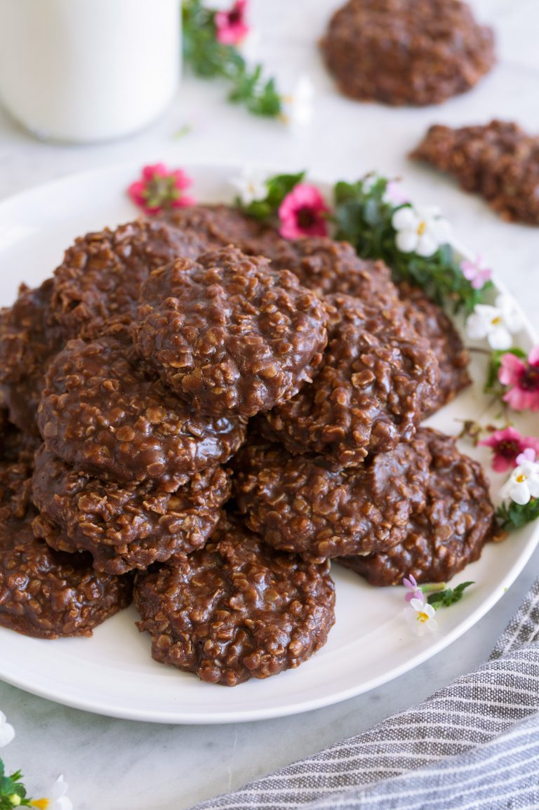

No Bake Cookies

Description
No Bake Cookies are such a nostalgic childhood favorite! This recipe has that classic chocolate peanut butter flavor combo and the perfect chewy, fudgy texture. And I'm pretty sure they're the easiest cookies on the planet to make!
This is almost the exact same recipe I had when I was younger but I did add in a little bit more cocoa and peanut butter here, because why not?? It's a flavor combo I never can resist!
Ingredients
- 1/2 cup salted butter
- 1 3/4 cups granulated sugar
- 1/3 cup unsweetened cocoa powder
- 1/2 cup milk
- 1 tsp vanilla extract
- 2/3 cup creamy peanut butter
- 3 cups quick oats (don't use old fashioned oats)
Steps
- Line two baking sheets with parchment paper or set out approximately 29 cupcake liners.
- In a 2.5 to 3 quart medium saucepan combine butter, sugar, cocoa, and milk.
- Set over medium heat, and cook stirring frequently until it reaches a full boil.
- Allow mixture to boil 60 seconds without stirring.
- Remove from heat, immediately add in vanilla, peanut butter and quick oats.
- Stir mixture until well combined then, using a medium (2 Tbsp) cookie scoop or two spoons drop mixture onto lined baking sheets or into cupcake liners.
- Allow to rest at room temperature until set, about 20 - 30 minutes (to speed up setting refrigerate).
- Store cookies in an airtight container at room temperature.